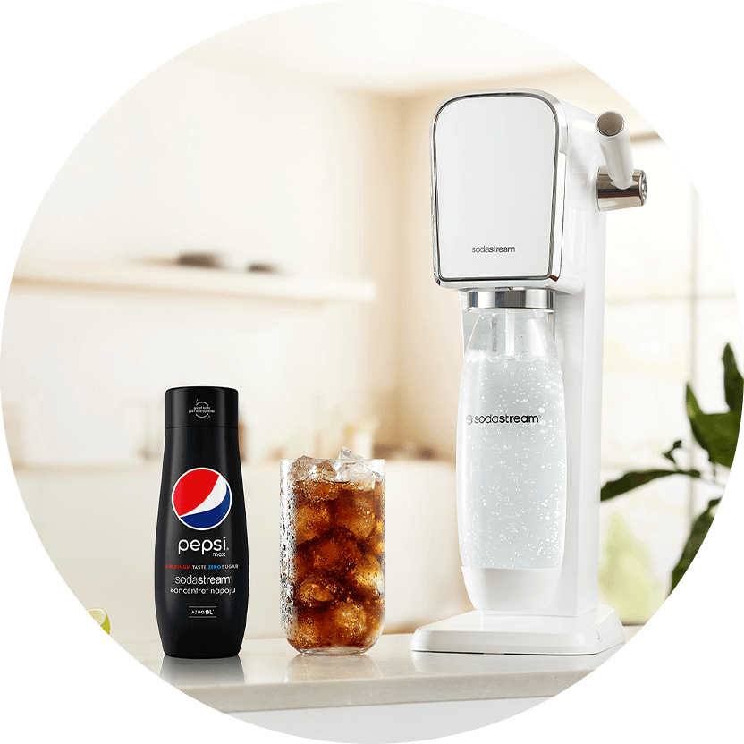

Syrop
SODASTREAM
SYROP PEPSI MAX,
440 ML
Stwórz oryginalną PEPSI MAX w dowolnej chwili. Ciesz się maksimum
smaku, maksimum bąbelków i maksimum radości z tworzenia. Dzięki
syropowi i saturatorowi SodaStream przygotujesz orzeźwiającą i
pobudzającą do działania PEPSI MAX bez wychodzenia z domu i to
wyłącznie z dwóch składników.
PEPSI MAX – maksimum orzeźwienia bez cukru.
jedna sodastream
wiele możliwości
TYLKO DWA SKŁADNIKI
Sięgnij po syrop PEPSI MAX i odtwórz swój ulubiony napój bez cukru w kilka chwil. Co będziesz potrzebować oprócz syropu? Wystarczy Ci saturator oraz zwykła woda z kranu. Dodatkowo dzięki SodaStream dobierzesz poziom nagazowania zależnie od potrzeb. Lekki, średni, a może mocny gaz? Od teraz Twoja PEPSI MAX będzie idealnie i świeżo nagazowana.

gazuj
miksuj
smakuj
PEPSI MAX to idealna i niskokaloryczna baza do drinków, która doskonale komponuje się z niemal wszystkimi owocami oraz rozmaitymi ziołami i przyprawami. PEPSI MAX z pewnością będzie Twoim regularnym towarzyszem podczas wieczornych seansów filmowych oraz imprez ze znajomymi.
JEDNA SODASTREAM - WIELE MOŻLIWOŚCI
Daj się porwać naszym bąbelkowym eksperymentom i wypróbuj również inne smaki syropów SodaStream. Do wyboru mamy syropy, przy pomocy których odtworzysz klasyczne napoje, syropy owocowe, syropy bez cukru oraz rozmaite zestawy. Wybierz SodaStream i ciesz się maksimum smaku w swoim domu!
SPRAWDŹ NASZ PRZEPIS NA ORZEŹWIENIE
#PushForBetter